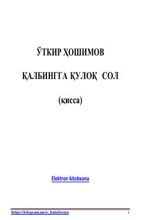

QQTalaba Yodgorning hayoti va insoniy his-tuyg'ular haqida o'zbek qissasi.
Bu asar mashhur o'zbek yozuvchisi O'tkir Hoshimovning qissasi bo'lib, Toshkentda talaba yigit Yodgorning hayotini tasvirlaydi. Qor yog'ayotgan kechada kutubxonadan qaytayotgan Yodgor tramvayda bir qizni bezorilardan himoya qiladi. Asar insoniy his-tuyg'ular, yaxshilik va mehr-muhabbat mavzularini o'zbek milliy ruhi bilan uyg'un tarzda yoritadi.